Chapter Eleven
Dual Nature of Radiation and Matter
Dual Nature of Radiation and Matter

The Maxwell’s equations of electromagnetism and Hertz experiments on the generation and detection of electromagnetic waves in 1887 strongly established the wave nature of light. Towards the same period at the end of 19th century, experimental investigations on conduction of electricity (electric discharge) through gases at low pressure in a discharge tube led to many historic discoveries.
The discovery of X-rays by Roentgen in 1895, and of electron by J. J. Thomson in 1897, were important milestones in the understanding of atomic structure. It was found that at sufficiently low pressure of about 0.001 mm of mercury column, a discharge took place between the two electrodes on applying the electric field to the gas in the discharge tube. A fluorescent glow appeared on the glass opposite to cathode. The colour of glow of the glass depended on the type of glass, it being yellowish-green for soda glass. The cause of this fluorescence was attributed to the radiation which appeared to be coming from the cathode. These cathode rays were discovered, in 1870, by William Crookes who later, in 1879, suggested that these rays consisted of streams of fast moving negatively charged particles. The British physicist J. J. Thomson (1856-1940) confirmed this hypothesis. By applying mutually perpendicular electric and magnetic fields across the discharge tube, J. J. Thomson was the first to determine experimentally the speed and the specific charge [charge to mass ratio (e/m)] of the cathode ray particles. They were found to travel with speeds ranging from about 0.1 to 0.2 times the speed of light (3 ×108 m/s). The presently accepted value of e/m is 1.76 × 1011 C/kg. Further, the value of e/m was found to be independent of the nature of the material/metal used as the cathode (emitter), or the gas introduced in the discharge tube. This observation suggested the universality of the cathode ray particles.
Around the same time, in 1887, it was found that certain metals, when irradiated by ultraviolet light, emitted negatively charged particles having small speeds. Also, certain metals when heated to a high temperature were found to emit negatively charged particles. The value of e/m of these particles was found to be the same as that for cathode ray particles. These observations thus established that all these particles, although produced under different conditions, were identical in nature. J. J. Thomson, in 1897, named these particles as electrons, and suggested that they were fundamental, universal constituents of matter. For his epoch-making discovery of electron, through his theoretical and experimental investigations on conduction of electricity by gasses, he was awarded the Nobel Prize in Physics in 1906. In 1913, the American physicist R. A. Millikan (1868-1953) performed the pioneering oil-drop experiment for the precise measurement of the charge on an electron. He found that the charge on an oil-droplet was always an integral multiple of an elementary charge, 1.602 × 10–19 C. Millikan’s experiment established that electric charge is quantised. From the values of charge (e) and specific charge
(e/m), the mass (m) of the electron could be determined.
We know that metals have free electrons (negatively charged particles) that are responsible for their conductivity. However, the free electrons cannot normally escape out of the metal surface. If an electron attempts to come out of the metal, the metal surface acquires a positive charge and pulls the electron back to the metal. The free electron is thus held inside the metal surface by the attractive forces of the ions. Consequently, the electron can come out of the metal surface only if it has got sufficient energy to overcome the attractive pull. A certain minimum amount of energy is required to be given to an electron to pull it out from the surface of the metal. This minimum energy required by an electron to escape from the metal surface is called the work function of the metal. It is generally denoted by φ0 and measured in ev (electron volt). One electron volt is the energy gained by an electron when it has been accelerated by a potential difference of 1 volt, so that 1 eV = 1.602 ×10–19 J.
This unit of energy is commonly used in atomic and nuclear physics. The work function (φ0) depends on the properties of the metal and the nature of its surface. The values of work function of some metals are given in Table 11.1. These values are approximate as they are very sensitive to surface impurities.
Note from Table 11.1 that the work function of platinum is the highest (φ0 = 5.65 eV) while it is the lowest (φ0 = 2.14 eV) for caesium.
The minimum energy required for the electron emission from the metal surface can be supplied to the free electrons by any one of the following physical processes:
(i) Thermionic emission: By suitably heating, sufficient thermal energy can be imparted to the free electrons to enable them to come out of the metal.
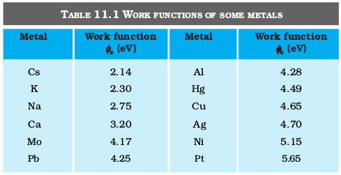
(ii) Field emission: By applying a very strong electric field (of the order of 108 V m–1) to a metal, electrons can be pulled out of the metal, as in a spark plug.
(iii) Photo-electric emission: When light of suitable frequency illuminates a metal surface, electrons are emitted from the metal surface. These photo(light)-generated electrons are called photoelectrons.
11.3.1 Hertz’s observations
The phenomenon of photoelectric emission was discovered in 1887 by Heinrich Hertz (1857-1894), during his electromagnetic wave experiments. In his experimental investigation on the production of electromagnetic waves by means of a spark discharge, Hertz observed that high voltage sparks across the detector loop were enhanced when the emitter plate was illuminated by ultraviolet light from an arc lamp.
Light shining on the metal surface somehow facilitated the escape of free, charged particles which we now know as electrons. When light falls on a metal surface, some electrons near the surface absorb enough energy from the incident radiation to overcome the attraction of the positive ions in the material of the surface. After gaining sufficient energy from the incident light, the electrons escape from the surface of the metal into the surrounding space.
11.3.2 Hallwachs’ and Lenard’s observations
Wilhelm Hallwachs and Philipp Lenard investigated the phenomenon of photoelectric emission in detail during 1886-1902.
Lenard (1862-1947) observed that when ultraviolet radiations were allowed to fall on the emitter plate of an evacuated glass tube enclosing two electrodes (metal plates), current flows in the circuit (Fig. 11.1). As soon as the ultraviolet radiations were stopped, the current flow also stopped. These observations indicate that when ultraviolet radiations fall on the emitter plate C, electrons are ejected from it which are attracted towards the positive, collector plate A by the electric field. The electrons flow through the evacuated glass tube, resulting in the current flow. Thus, light falling on the surface of the emitter causes current in the external circuit. Hallwachs and Lenard studied how this photo current varied with collector plate potential, and with frequency and intensity of incident light.
Hallwachs, in 1888, undertook the study further and connected a negatively charged zinc plate to an electroscope. He observed that the zinc plate lost its charge when it was illuminated by ultraviolet light. Further, the uncharged zinc plate became positively charged when it was irradiated by ultraviolet light. Positive charge on a positively charged zinc plate was found to be further enhanced when it was illuminated by ultraviolet light. From these observations he concluded that negatively charged particles were emitted from the zinc plate under the action of ultraviolet light.
After the discovery of the electron in 1897, it became evident that the incident light causes electrons to be emitted from the emitter plate. Due to negative charge, the emitted electrons are pushed towards the collector plate by the electric field. Hallwachs and Lenard also observed that when ultraviolet light fell on the emitter plate, no electrons were emitted at all when the frequency of the incident light was smaller than a certain minimum value, called the threshold frequency. This minimum frequency depends on the nature of the material of the emitter plate.
It was found that certain metals like zinc, cadmium, magnesium, etc., responded only to ultraviolet light, having short wavelength, to cause electron emission from the surface. However, some alkali metals such as lithium, sodium, potassium, caesium and rubidium were sensitive
even to visible light. All these photosensitive substances emit electrons when they are illuminated by light. After the discovery of electrons, these electrons were termed as photoelectrons. The phenomenon is called photoelectric effect.
Figure 11.1 depicts a schematic view of the arrangement used for the experimental study of the photoelectric effect. It consists of an evacuated glass/quartz tube having a photosensitive plate C and another metal plate A. Monochromatic light from the source S of sufficiently short wavelength passes through the window W and falls on the photosensitive plate C (emitter). A transparent quartz window is sealed on to the glass tube, which permits ultraviolet radiation to pass through it and irradiate the photosensitive plate C. The electrons are emitted by the plate C and are collected by the plate A (collector), by the electric field created by the battery. The battery maintains the potential difference between the plates C and A, that can be varied. The polarity of the plates C and A can be reversed by a commutator. Thus, the plate A can be maintained at a desired positive or negative potential with respect to emitter C. When the collector plate A is positive with respect to the emitter plate C, the electrons are attracted to it. The emission of electrons causes flow of electric current in the circuit. The potential difference between the emitter and collector plates is measured by a voltmeter (V) whereas the resulting photo current flowing in the circuit is measured by a microammeter (µA). The photoelectric current can be increased or decreased by varying the potential of collector plate A with respect to the emitter plate C. The intensity and frequency of the incident light can be varied, as can the potential difference V between the emitter C and the collector A.
Figure 11.1 Experimental arrangement for study of photoelectric effect.
We can use the experimental arrangement of Fig. 11.1 to study the variation of photocurrent with (a) intensity of radiation, (b) frequency of incidentradiation, (c) the potential difference between the plates A and C, and (d) the nature of the material of plate C. Light of different frequencies can be used by putting appropriate coloured filter or coloured glass in the path of light falling on the emitter C. The intensity of light is varied by changing the distance of the light source from the emitter.
11.4.1 Effect of intensity of light on photocurrent
The collector A is maintained at a positive potential with respect to emitter C so that electrons ejected from C are attracted towards collector A. Keeping the frequency of the incident radiation and the accelerating potential fixed, the intensity of light is varied and the resulting photoelectric current is measured each time. It is found that the photocurrent increases linearly with intensity of incident light as shown graphically in Fig. 11.2. The photocurrent is directly proportional to the number of photoelectrons emitted per second. This implies that the number of photoelectrons emitted per second is directly proportional to the intensity of incident radiation.
11.4.2 Effect of potential on photoelectric current
We first keep the plate A at some positive accelerating potential with respect to the plate C and illuminate the plate C with light of fixed frequency ν and fixed intensity I1. We next vary the positive potential of plate A gradually and measure the resulting photocurrent each time. It is found that the photoelectric current increases with increase in accelerating (positive) potential. At some stage, for a certain positive potential of plate A, all the emitted electrons are collected by the plate A and the photoelectric current becomes maximum or saturates. If we increase the accelerating potential of plate A further, the photocurrent does not increase. This maximum value of the photoelectric current is called saturation current. Saturation current corresponds to the case when all the photoelectrons emitted by the emitter plate C reach the collector plate A.
We now apply a negative (retarding) potential to the plate A with respect to the plate C and make it increasingly negative gradually. When the polarity is reversed, the electrons are repelled and only the most energetic electrons are able to reach the collector A. The photocurrent is found to decrease rapidly until it drops to zero at a certain sharply defined, critical value of the negative potential V0 on the plate A. For a particular frequency of incident radiation, the minimum negative (retarding) potential V0 given to the plate A for which the photocurrent stops or becomes zero is called the cut-off or stopping potential.
The interpretation of the observation in terms of photoelectrons is straightforward. All the photoelectrons emitted from the metal do not have the same energy. Photoelectric current is zero when the stopping potential is sufficient to repel even the most energetic photoelectrons, with the maximum kinetic energy (Kmax), so that
Kmax = e V0 (11.1)
We can now repeat this experiment with incident radiation of the same frequency but of higher intensity I2 and I3 (I3 > I2 > I1). We note that the saturation currents are now found to be at higher values. This shows that more electrons are being emitted per second, proportional to the intensity of incident radiation. But the stopping potential remains the same as that for the incident radiation of intensity I1, as shown graphically in Fig. 11.3. Thus, for a given frequency of the incident radiation, the stopping potential is independent of its intensity. In other words, the maximum kinetic energy of photoelectrons depends on the light source and the emitter plate material, but is independent of intensity of incident radiation.
11.4.3 Effect of frequency of incident radiation on stopping potential
We now study the relation between the frequency ν of the incident radiation and the stopping potential V0. We suitably adjust the same intensity of light radiation at various frequencies and study the variation of photocurrent with collector plate potential. The resulting variation is shown in Fig. 11.4. We obtain different values of stopping potential but the same value of the saturation current for incident radiation of different frequencies. The energy of the emitted electrons depends on the frequency of the incident radiations. The stopping potential is more negative for higher frequencies of incident radiation. Note from Fig. 11.4 that the stopping potentials are in the order V03 > V02 > V01 if the frequencies are in the order ν3 > ν2 > ν1 . This implies that greater the frequency of incident light, greater is the maximum kinetic energy of the photoelectrons. Consequently, we need greater retarding potential to stop them completely. If we plot a graph between the frequency of incident radiation and the corresponding stopping potential for different metals we get a straight line, as shown in Fig. 11.5.
Figure 11.5 Variation of stopping potential V0 with frequency ν of incident radiation for a given photosensitive material.
The graph shows that
(i) the stopping potential V0 varies linearly with the frequency of incident radiation for a given photosensitive material.
(ii) there exists a certain minimum cut-off frequency ν0 for which the stopping potential is zero.
These observations have two implications:
(i) The maximum kinetic energy of the photoelectrons varies linearly with the frequency of incident radiation, but is independent of its intensity.
(ii) For a frequency ν of incident radiation, lower than the cut-off frequency ν0, no photoelectric emission is possible even if the intensity is large.
This minimum, cut-off frequency ν0, is called the threshold frequency. It is different for different metals.
Different photosensitive materials respond differently to light. Selenium is more sensitive than zinc or copper. The same photosensitive substance gives different response to light of different wavelengths. For example, ultraviolet light gives rise to photoelectric effect in copper while green or red light does not.
Note that in all the above experiments, it is found that, if frequency of the incident radiation exceeds the threshold frequency, the photoelectric emission starts instantaneously without any apparent time lag, even if the incident radiation is very dim. It is now known that emission starts in a time of the order of 10–9 s or less.
We now summarise the experimental features and observations described in this section.
(i) For a given photosensitive material and frequency of incident radiation (above the threshold frequency), the photoelectric current is directly proportional to the intensity of incident light (Fig. 11.2).
(ii) For a given photosensitive material and frequency of incident radiation, saturation current is found to be proportional to the intensity of incident radiation whereas the stopping potential is independent of its intensity (Fig. 11.3).
(iii) For a given photosensitive material, there exists a certain minimum cut-off frequency of the incident radiation, called the threshold frequency, below which no emission of photoelectrons takes place, no matter how intense the incident light is. Above the threshold frequency, the stopping potential or equivalently the maximum kinetic energy of the emitted photoelectrons increases linearly with the frequency of the incident radiation, but is independent of its intensity (Fig. 11.5).
(iv) The photoelectric emission is an instantaneous process without any apparent time lag (∼10–9s or less), even when the incident radiation is made exceedingly dim.
According to the wave picture of light, the free electrons at the surface of the metal (over which the beam of radiation falls) absorb the radiant energy continuously. The greater the intensity of radiation, the greater are the amplitude of electric and magnetic fields. Consequently, the greater the intensity, the greater should be the energy absorbed by each electron. In this picture, the maximum kinetic energy of the photoelectrons on the surface is then expected to increase with increase in intensity. Also, no matter what the frequency of radiation is, a sufficiently intense beam of radiation (over sufficient time) should be able to impart enough energy to the electrons, so that they exceed the minimum energy needed to escape from the metal surface . A threshold frequency, therefore, should not exist. These expectations of the wave theory directly contradict observations (i), (ii) and (iii) given at the end of sub-section 11.4.3.
Further, we should note that in the wave picture, the absorption of energy by electron takes place continuously over the entire
wavefront of the radiation. Since a large number of electrons absorb energy, the energy absorbed per electron per unit time turns out to be small. Explicit calculations estimate that it can take hours or more for a single electron to pick up sufficient energy to overcome the work function and come out of the metal. This conclusion is again in striking contrast to observation (iv) that the photoelectric emission is instantaneous. In short, the wave picture is unable to explain the most basic features of photoelectric emission.
In 1905, Albert Einstein (1879-1955) proposed a radically new picture of electromagnetic radiation to explain photoelectric effect. In this picture, photoelectric emission does not take place by continuous absorption of energy from radiation. Radiation energy is built up of discrete units – the so called quanta of energy of radiation. Each quantum of radiant energy has energy hν, where h is Planck’s constant and ν the frequency of light. In photoelectric effect, an electron absorbs a quantum of energy (hν) of radiation. If this quantum of energy absorbed exceeds the minimum energy needed for the electron to escape from the metal surface (work function φ0), the electron is emitted with maximum kinetic energy
Kmax = hν – φ0 (11.2)
More tightly bound electrons will emerge with kinetic energies less than the maximum value. Note that the intensity of light of a given frequency is determined by the number of photons incident per second. Increasing the intensity will increase the number of emitted electrons per second. However, the maximum kinetic energy of the emitted photoelectrons is determined by the energy of each photon.
Equation (11.2) is known as Einstein’s photoelectric equation. We now see how this equation accounts in a simple and elegant manner all the observations on photoelectric effect given at the end of sub-section 11.4.3.
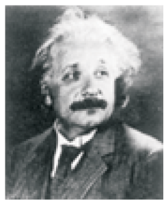
• Albert Einstein (1879 – 1955) Einstein, one of the greatest physicists of all time, was born in Ulm, Germany. In 1905, he published three path-breaking papers. In the first paper, he introduced the notion of light quanta (now called photons) and used it to explain the features of photoelectric effect. In the second paper, he developed a theory of Brownian motion, confirmed experimentally a few years later and provided a convincing evidence of the atomic picture of matter. The third paper gave birth to the special theory of relativity. In 1916, he published the general theory of relativity. Some of Einstein’s most significant later contributions are: the notion of stimulated emission introduced in an alternative derivation of Planck’s blackbody radiation law, static model of the universe which started modern cosmology, quantum statistics of a gas of massive bosons, and a critical analysis of the foundations of quantum mechanics. In 1921, he was awarded the Nobel Prize in physics for his contribution to theoretical physics and the photoelectric effect.
Using Eq. (11.1), the photoelectric equation, Eq. (11.2), can be
written as
e V0 = h ν – φ0; for 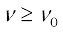
or V0 =  (11.4)
(11.4)
This is an important result. It predicts that the V0 versus ν curve is a straight line with slope = (h/e), independent of the nature of the material. During 1906-1916, Millikan performed a series of experiments on photoelectric effect, aimed at disproving Einstein’s photoelectric equation. He measured the slope of the straight line obtained for sodium, similar to that shown in Fig. 11.5. Using the known value of e, he determined the value of Planck’s constant h. This value was close to the value of Planck’s contant (= 6.626 × 10–34J s) determined in an entirely different context. In this way, in 1916, Millikan proved the validity of Einstein’s photoelectric equation, instead of disproving it.
The successful explanation of photoelectric effect using the hypothesis of light quanta and the experimental determination of values of h and φ0, in agreement with values obtained from other experiments, led to the acceptance of Einstein’s picture of photoelectric effect. Millikan verified photoelectric equation with great precision, for a number of alkali metals over a wide range of radiation frequencies.
Photoelectric effect thus gave evidence to the strange fact that light in interaction with matter behaved as if it was made of quanta or packets of energy, each of energy h ν.
Is the light quantum of energy to be associated with a particle? Einstein arrived at the important result, that the light quantum can also be associated with momentum (h ν/c). A definite value of energy as well as momentum is a strong sign that the light quantum can be associated with a particle. This particle was later named photon. The particle-like behaviour of light was further confirmed, in 1924, by the experiment of A.H. Compton (1892-1962) on scattering of X-rays from electrons. In 1921, Einstein was awarded the Nobel Prize in Physics for his contribution to theoretical physics and the photoelectric effect. In 1923, Millikan was awarded the Nobel Prize in physics for his work on the elementary charge of electricity and on the photoelectric effect.
We can summarise the photon picture of electromagnetic radiation as follows:
(i) In interaction of radiation with matter, radiation behaves as if it is made up of particles called photons.
(ii) Each photon has energy E (=hν) and momentum p (= h ν/c), and
speed c, the speed of light.
(iii) All photons of light of a particular frequency ν, or wavelength λ, have the same energy E (=hν = hc/λ) and momentum p (= hν/c= h/λ), whatever the intensity of radiation may be. By increasing the intensity of light of given wavelength, there is only an increase in the number of photons per second crossing a given area, with each photon having the same energy. Thus, photon energy is independent of intensity of radiation.
(iv) Photons are electrically neutral and are not deflected by electric and magnetic fields.
(v) In a photon-particle collision (such as photon-electron collision), the total energy and total momentum are conserved. However, the number of photons may not be conserved in a collision. The photon may be absorbed or a new photon may be created.
Example 11.1 Monochromatic light of frequency 6.0 ×1014 Hz is produced by a laser. The power emitted is 2.0 ×10–3 W. (a) What is the energy of a photon in the light beam? (b) How many photons per second, on an average, are emitted by the source?
Solution
(a) Each photon has an energy
E = h ν = ( 6.63 ×10–34 J s) (6.0 ×1014 Hz)
= 3.98 × 10–19 J
(b) If N is the number of photons emitted by the source per second, the power P transmitted in the beam equals N times the energy per photon E, so that P = N E. Then
N = 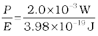
= 5.0 ×1015 photons per second.
Example 11.2 The work function of caesium is 2.14 eV. Find (a) the threshold frequency for caesium, and (b) the wavelength of the incident light if the photocurrent is brought to zero by a stopping potential of 0.60 V.
Solution
(a) For the cut-off or threshold frequency, the energy h ν0 of the incident radiation must be equal to work function φ0, so that
ν0 = 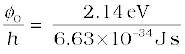
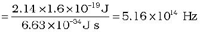
Thus, for frequencies less than this threshold frequency, no photoelectrons are ejected.
(b) Photocurrent reduces to zero, when maximum kinetic energy of the emitted photoelectrons equals the potential energy e V0 by the retarding potential V0. Einstein’s Photoelectric equation is
eV0 = hν – φ0 = 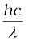 – φ0
or, λ = hc/(eV0 + φ0)
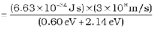
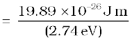
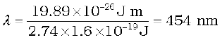
Example 11.3 The wavelength of light in the visible region is about 390 nm for violet colour, about 550 nm (average wavelength) for yellow-green colour and about 760 nm for red colour.
(a) What are the energies of photons in (eV) at the (i) violet end, (ii) average wavelength, yellow-green colour, and (iii) red end of the visible spectrum? (Take h = 6.63×10–34 J s and 1 eV = 1.6×10 –19J.)
(b) From which of the photosensitive materials with work functions listed in Table 11.1 and using the results of (i), (ii) and (iii) of (a), can you build a photoelectric device that operates with visible light?
Solution
(a) Energy of the incident photon, E = hν = hc/λ
E = (6.63×10–34J s) (3×108 m/s)/λ
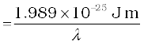
(i) For violet light, λ1 = 390 nm (lower wavelength end)
Incident photon energy, E1 = 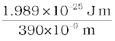
= 5.10 × 10–19J
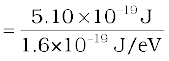 = 3.19 eV
(ii) For yellow-green light, λ2 = 550 nm (average wavelength)
Incident photon energy, E2 = 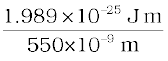
= 3.62×10–19 J = 2.26 eV
(iii) For red light, λ3 = 760 nm (higher wavelength end)
Incident photon energy, E3 = 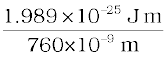
= 2.62×10–19 J = 1.64 eV
(b) For a photoelectric device to operate, we require incident light energy E to be equal to or greater than the work function φ0 of the material. Thus, the photoelectric device will operate with violet light (with E = 3.19 eV) photosensitive material Na (with φ0 = 2.75 eV), K (with φ0 = 2.30 eV) and Cs (with φ0 = 2.14 eV). It will also operate with yellow-green light (with E = 2.26 eV) for Cs (with φ0 = 2.14 eV) only. However, it will not operate with red light (with E = 1.64 eV) for any of these photosensitive materials.
The dual (wave-particle) nature of light (electromagnetic radiation, in general) comes out clearly from what we have learnt in this and the preceding chapters. The wave nature of light shows up in the phenomena of interference, diffraction and polarisation. On the other hand, in photoelectric effect and Compton effect which involve energy and momentum transfer, radiation behaves as if it is made up of a bunch of particles – the photons. Whether a particle or wave description is best suited for understanding an experiment depends on the nature of the experiment. For example, in the familiar phenomenon of seeing an object by our eye, both descriptions are important. The gathering and focussing mechanism of light by the eye-lens is well described in the wave picture. But its absorption by the rods and cones (of the retina) requires the photon picture of light.
A natural question arises: If radiation has a dual (wave-particle) nature, might not the particles of nature (the electrons, protons, etc.) also exhibit wave-like character? In 1924, the French physicist Louis Victor de Broglie (pronounced as de Broy) (1892-1987) put forward the bold hypothesis that moving particles of matter should display wave-like properties under suitable conditions. He reasoned that nature was symmetrical and that the two basic physical entities – matter and energy, must have symmetrical character. If radiation shows dual aspects, so should matter. De Broglie proposed that the wave length λ associated with a particle of momentum p is given as
λ =  (11.5)
(11.5)
where m is the mass of the particle and v its speed. Equation (11.5) is known as the de Broglie relation and the wavelength λ of the matter wave is called de Broglie wavelength. The dual aspect of matter is evident in the de Broglie relation. On the left hand side of Eq. (11.5), λ is the attribute of a wave while on the right hand side the momentum p is a typical attribute of a particle. Planck’s constant h relates the two attributes.
Equation (11.5) for a material particle is basically a hypothesis whose validity can be tested only by experiment. However, it is interesting to see that it is satisfied also by a photon. For a photon, as we have seen,
p = hν /c (11.6)
Therefore,
 (11.7)
(11.7)
That is, the de Broglie wavelength of a photon given by Eq. (11.5) equals the wavelength of electromagnetic radiation of which the photon is a quantum of energy and momentum.
Clearly, from Eq. (11.5 ), λ is smaller for a heavier particle (large m) or more energetic particle (large v). For example, the de Broglie wavelength of a ball of mass 0.12 kg moving with a speed of 20 m s–1 is easily calculated:
p = m v = 0.12 kg × 20 m s–1 = 2.40 kg m s–1
λ = 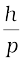 =  = 2.76 × 10–34 m
= 2.76 × 10–34 m
This wavelength is so small that it is beyond any measurement. This is the reason why macroscopic objects in our daily life do not show wave-like properties. On the other hand, in the sub-atomic domain, the wave character of particles is significant and measurable.
Consider an electron (mass m, charge e) accelerated from rest through a potential V. The kinetic energy K
Photocell
A photocell is a technological application of the photoelectric effect. It is a device whose electrical properties are affected by light. It is also sometimes called an electric eye. A photocell consists of a semi-cylindrical photo-sensitive metal plate C (emitter) and a wire loop A (collector) supported in an evacuated glass or quartz bulb. It is connected to the external circuit having a high-tension battery B and microammeter (µA) as shown in the Figure. Sometimes, instead of the plate C, a thin layer of photosensitive material is pasted on the inside of the bulb. A part of the bulb is left clean for the light to enter it.
A photo cell
When light of suitable wavelength falls on the emitter C, photoelectrons are emitted. These photoelectrons are drawn to the collector A. Photocurrent of the order of a few microampere can be normally obtained from a photo cell.
A photocell converts a change in intensity of illumination into a change in photocurrent. This current can be used to operate control systems and in light measuring devices. A photocell of lead sulphide sensitive to infrared radiation is used in electronic ignition circuits.
In scientific work, photo cells are used whenever it is necessary to measure the intensity of light. Light meters in photographic cameras make use of photo cells to measure the intensity of incident light. The photocells, inserted in the door light electric circuit, are used as automatic door opener. A person approaching a doorway may interrupt a light beam which is incident on a photocell. The abrupt change in photocurrent may be used to start a motor which opens the door or rings an alarm. They are used in the control of a counting device which records every interruption of the light beam caused by a person or object passing across the beam. So photocells help count the persons entering an auditorium, provided they enter the hall one by one. They are used for detection of traffic law defaulters: an alarm may be sounded whenever a beam of (invisible) radiation is intercepted.
In burglar alarm, (invisible) ultraviolet light is continuously made to fall on a photocell installed at the doorway. A person entering the door interrupts the beam falling on the photocell. The abrupt change in photocurrent is used to start an electric bell ringing. In fire alarm, a number of photocells are installed at suitable places in a building. In the event of breaking out of fire, light radiations fall upon the photocell. This completes the electric circuit through an electric bell or a siren which starts operating as a warning signal.
Photocells are used in the reproduction of sound in motion pictures and in the television camera for scanning and telecasting scenes. They are used in industries for detecting minor flaws or holes in metal sheets.
of the electron equals the work done (eV ) on it by the electric field:
K = e V (11.8)
Now , K =  m v2 =
m v2 =  , so that
, so that
p = 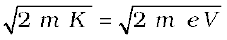 (11.9)
The de Broglie wavelength λ of the electron is then
λ = 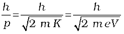 (11.10)
Substituting the numerical values of h, m, e,
we get
 (11.11)
(11.11)
where V is the magnitude of accelerating potential in volts. For a 120 V accelerating potential, Eq. (11.11) gives λ = 0.112 nm. This wavelength is of the same order as the spacing between the atomic planes in crystals. This suggests that matter waves associated with an electron could be verified by crystal diffraction experiments analogous to X-ray diffraction. We describe the experimental verification of the de Broglie hypothesis in the next section. In 1929, de Broglie was awarded the Nobel Prize in Physics for his discovery of the wave nature of electrons.

Louis Victor de Broglie (1892 – 1987) French physicist who put forth revolutionary idea of wave nature of matter. This idea was developed by Erwin Schródinger into a full-fledged theory of quantum mechanics commonly known as wave mechanics. In 1929, he was awarded the Nobel Prize in Physics for his discovery of the wave nature of electrons.
The matter–wave picture elegantly incorporated the Heisenberg’s uncertainty principle. According to the principle, it is not possible to measure both the position and momentum of an electron (or any other particle) at the same time exactly. There is always some uncertainty (∆ x) in the specification of position and some uncertainty (∆p) in the specification of momentum. The product of ∆x and ∆p is of the order of * (with = h/2π), i.e.,
∆x ∆p ≈ h (11.12)
Equation (11.12) allows the possibility that ∆x is zero; but then ∆p must be infinite in order that the product is non-zero. Similarly, if ∆p is zero, ∆x must be infinite. Ordinarily, both ∆x and ∆p are non-zero such that their product is of the order of .
Now, if an electron has a definite momentum p, (i.e.∆p = 0), by the de Broglie relation, it has a definite wavelength λ. A wave of definite (single) wavelength extends all over space. By Born’s probability interpretation this means that the electron is not localised in any finite region of space. That is, its position uncertainty is infinite (∆x → ∞), which is consistent with the uncertainty principle.
In general, the matter wave associated with the electron is not extended all over space. It is a wave packet extending over some finite region of space. In that case ∆x is not infinite but has some finite value depending on the extension of the wave packet. Also, you must appreciate that a wave packet of finite extension does not have a single wavelength. It is built up of wavelengths spread around some central wavelength.
* A more rigorous treatment gives ∆x ∆p h /2.
By de Broglie’s relation, then, the momentum of the electron will also have a spread – an uncertainty ∆p. This is as expected from the uncertainty principle. It can be shown that the wave packet description together with de Broglie relation and Born’s probability interpretation reproduce the Heisenberg’s uncertainty principle exactly.
In Chapter 12, the de Broglie relation will be seen to justify Bohr’s postulate on quantisation of angular momentum of electron in an atom.
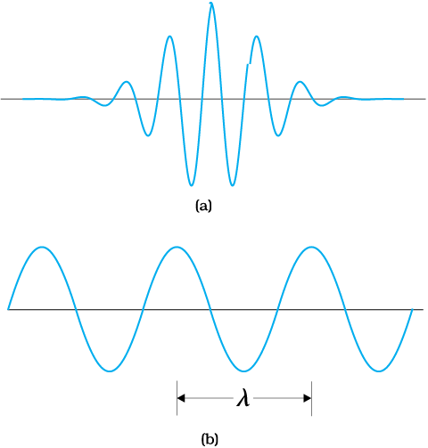
Figure 11.6 (a) The wave packet description of an electron. The wave packet corresponds to a spread of wavelength around some central wavelength (and hence by de Broglie relation, a spread in momentum). Consequently, it is associated with an uncertainty in position (∆x) and an uncertainty in momentum (∆p).(b) The matter wave corresponding to a definite momentum of an electron extends all over space. In this case, ∆p = 0 and ∆ x → ∞.
Figure 11.6 shows a schematic diagram of (a) a localised wave packet, and (b) an extended wave with fixed wavelength.
Example 11.4 What is the de Broglie wavelength associated with (a) an electron moving with a speed of 5.4×106 m/s, and (b) a ball of mass 150 g travelling at 30.0 m/s?
Solution
(a) For the electron:
Mass m = 9.11×10–31 kg, speed v = 5.4×106 m/s. Then, momentum p = m v = 9.11×10–31 (kg) × 5.4 × 106 (m/s)
p = 4.92 × 10–24 kg m/s
de Broglie wavelength, λ = h/p
= 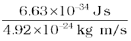
λ = 0.135 nm
(b) For the ball:
Mass m’ = 0.150 kg, speed v ’ = 30.0 m/s.
Then momentum p’ = m’ v’ = 0.150 (kg) × 30.0 (m/s)
p’= 4.50 kg m/s
de Broglie wavelength λ’ = h/p’.
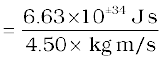
λ’ = 1.47 ×10–34 m
The de Broglie wavelength of electron is comparable with X-ray wavelengths. However, for the ball it is about 10–19 times the size of the proton, quite beyond experimental measurement.
Example 11.5 An electron, an α-particle, and a proton have the same kinetic energy. Which of these particles has the shortest de Broglie wavelength?
Solution
For a particle, de Broglie wavelength, λ = h/p
Kinetic energy, K = p2/2m
Then, 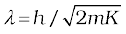
For the same kinetic energy K, the de Broglie wavelength associated with the particle is inversely proportional to the square root of their masses. A proton 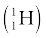 is 1836 times massive than an electron and an α-particle  four times that of a proton.
four times that of a proton.
Hence, α – particle has the shortest de Broglie wavelength.
Example 11.6 A particle is moving three times as fast as an electron. The ratio of the de Broglie wavelength of the particle to that of the electron is 1.813 × 10–4. Calculate the particle’s mass and identify the particle.
Solution
de Broglie wavelength of a moving particle, having mass m and
velocity v:

Mass, m = h/λv
For an electron, mass me = h/λe ve
Now, we have v/ve = 3 and
λ/λe = 1.813 × 10–4
Then, mass of the particle, m = me 
m = (9.11×10–31 kg) × (1/3) × (1/1.813 × 10–4)
m = 1.675 × 10–27 kg.
Thus, the particle, with this mass could be a proton or a neutron.
Probability interpretation to matter waves
It is worth pausing here to reflect on just what a matter wave associated with a particle, say, an electron, means. Actually, a truly satisfactory physical understanding of the dual nature of matter and radiation has not emerged so far. The great founders of quantum mechanics (Niels Bohr, Albert Einstein, and many others) struggled with this and related concepts for long. Still the deep physical interpretation of quantum mechanics continues to be an area of active research. Despite this, the concept of matter wave has been mathematically introduced in modern quantum mechanics with great success. An important milestone in this connection was when Max Born (1882-1970) suggested a probability interpretation to the matter wave amplitude. According to this, the intensity (square of the amplitude) of the matter wave at a point determines the probability density of the particle at that point. Probability density means probability per unit volume. Thus, if A is the amplitude of the wave at a point, |A|2 ∆V is the probability of the particle being found in a small volume ∆V around that point. Thus, if the intensity of matter wave is large in a certain region, there is a greater probability of the particle being found there than where the intensity is small.
Example 11.7 What is the de Broglie wavelength associated with an electron, accelerated through a potential differnece of 100 volts?
Solution Accelerating potential V = 100 V. The de Broglie wavelength λ is
λ = h /p 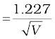 nm
λ 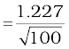 nm = 0.123 nm
The de Broglie wavelength associated with an electron in this case is of the order of X-ray wavelengths.
The wave nature of electrons was first experimentally verified by C.J. Davisson and L.H. Germer in 1927 and independently by G.P. Thomson, in 1928, who observed diffraction effects with beams of electrons scattered by crystals. Davisson and Thomson shared the Nobel Prize in 1937 for their experimental discovery of diffraction of electrons by crystals.
The experimental arrange-ment used by Davisson and Germer is schematically shown in Fig. 11.7. It consists of an electron gun which comprises of a tungsten filament F, coated with barium oxide and heated by a low voltage power supply (L.T. or battery). Electrons emitted by the filament are accelerated to a desired velocity by applying suitable potential/voltage from a high voltage power supply (H.T. or battery). They are made to pass through a cylinder with fine holes along its axis, producing a fine collimated beam. The beam is made to fall on the surface of a nickel crystal. The electrons are scattered in all directions by the atoms of the crystal. The intensity of the electron beam, scattered in a given direction, is measured by the electron detector (collector). The detector can be moved on a circular scale and is connected to a sensitive galvanometer, which records the current. The deflection of the galvanometer is proportional to the intensity of the electron beam entering the collector. The apparatus is enclosed in an evacuated chamber. By moving the detector on the circular scale at different positions, the intensity of the scattered electron beam is measured for different values of angle of scattering θ which is the angle between the incident and the scattered electron beams. The variation of the intensity (I) of the scattered electrons with the angle of scattering θ is obtained for different accelerating voltages.
The experiment was performed by varying the accelarating voltage from 44 V to 68 V. It was noticed that a strong peak appeared in the intensity (I) of the scattered electron for an accelarating voltage of 54V at a scattering angle θ = 50º
The appearance of the peak in a particular direction is due to the constructive interference of electrons scattered from different layers of the regularly spaced atoms of the crystals. From the electron diffraction measurements, the wavelength of matter waves was found to be
0.165 nm.
The de Broglie wavelength λ associated with electrons, using
Eq. (11.11), for V = 54 V is given by
λ = h /p 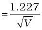 nm
λ 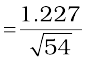 nm = 0.167 nm
Thus, there is an excellent agreement between the theoretical value and the experimentally obtained value of de Broglie wavelength. Davisson-Germer experiment thus strikingly confirms the wave nature of electrons and the de Broglie relation. More recently, in 1989, the wave nature of a beam of electrons was experimentally demonstrated in a double-slit experiment, similar to that used for the wave nature of light. Also, in an experiment in 1994, interference fringes were obtained with the beams of iodine molecules, which are about a million times more massive than electrons.
The de Broglie hypothesis has been basic to the development of modern quantum mechanics. It has also led to the field of electron optics. The wave properties of electrons have been utilised in the design of electron microscope which is a great improvement, with higher resolution, over the optical microscope.
Summary
1. The minimum energy needed by an electron to come out from a metal surface is called the work function of the metal. Energy (greater than the work function (φο) required for electron emission from the metal surface can be supplied by suitably heating or applying strong electric field or irradiating it by light of suitable frequency.
2. Photoelectric effect is the phenomenon of emission of electrons by metals when illuminated by light of suitable frequency. Certain metals respond to ultraviolet light while others are sensitive even to the visible light.
Photoelectric effect involves conversion of light energy into electrical energy. It follows the law of conservation of energy. The photoelectric emission is an instantaneous process and possesses certain special features.
3. Photoelectric current depends on (i) the intensity of incident light, (ii) the potential difference applied between the two electrodes, and (iii) the nature of the emitter material.
4. The stopping potential (Vo) depends on (i) the frequency of incident light, and (ii) the nature of the emitter material. For a given frequency of incident light, it is independent of its intensity. The stopping potential is directly related to the maximum kinetic energy of electrons emitted:
e V0 = (1/2) m v2max = Kmax.
5. Below a certain frequency (threshold frequency) ν0, characteristic of the metal, no photoelectric emission takes place, no matter how large the intensity may be.
6. The classical wave theory could not explain the main features of photoelectric effect. Its picture of continuous absorption of energy from radiation could not explain the independence of Kmax on intensity, the existence of νo and the instantaneous nature of the process. Einstein explained these features on the basis of photon picture of light. According to this, light is composed of discrete packets of energy called quanta or photons. Each photon carries an energy E (= h ν) and momentum p (= h/λ), which depend on the frequency (ν ) of incident light and not on its intensity. Photoelectric emission from the metal surface occurs due to absorption of a photon by an electron.
7. Einstein’s photoelectric equation is in accordance with the energy conservation law as applied to the photon absorption by an electron in the metal. The maximum kinetic energy (1/2)m v2max is equal to
the photon energy (hν) minus the work function φ0 (= hν0) of the
target metal:
 m v2max = V0 e = hν – φ0 = h (ν – ν0)
m v2max = V0 e = hν – φ0 = h (ν – ν0)
This photoelectric equation explains all the features of the photoelectric effect. Millikan’s first precise measurements confirmed the Einstein’s photoelectric equation and obtained an accurate value of Planck’s constant h. This led to the acceptance of particle or photon description (nature) of electromagnetic radiation, introduced by Einstein.
8. Radiation has dual nature: wave and particle. The nature of experiment determines whether a wave or particle description is best suited for understanding the experimental result. Reasoning that radiation and matter should be symmetrical in nature, Louis Victor de Broglie attributed a wave-like character to matter (material particles). The waves associated with the moving material particles are called matter waves or de Broglie waves.
9. The de Broglie wavelength (λ) associated with a moving particle is related to its momentum p as: λ = h/p. The dualism of matter is inherent in the de Broglie relation which contains a wave concept (λ) and a particle concept (p). The de Broglie wavelength is independent of the charge and nature of the material particle. It is significantly measurable (of the order of the atomic-planes spacing in crystals) only in case of sub-atomic particles like electrons, protons, etc. (due to smallness of their masses and hence, momenta). However, it is indeed very small, quite beyond measurement, in case of macroscopic objects, commonly encountered in everyday life.
10. Electron diffraction experiments by Davisson and Germer, and by G. P. Thomson, as well as many later experiments, have verified and confirmed the wave-nature of electrons. The de Broglie hypothesis of matter waves supports the Bohr’s concept of stationary orbits.
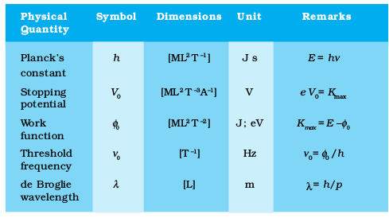
Points to Ponder
1. Free electrons in a metal are free in the sense that they move inside the metal in a constant potential (This is only an approximation). They are not free to move out of the metal. They need additional energy to get out of the metal.
2. Free electrons in a metal do not all have the same energy. Like molecules in a gas jar, the electrons have a certain energy distribution at a given temperature. This distribution is different from the usual Maxwell’s distribution that you have learnt in the study of kinetic theory of gases. You will learn about it in later courses, but the difference has to do with the fact that electrons obey Pauli’s exclusion principle.
3. Because of the energy distribution of free electrons in a metal, the energy required by an electron to come out of the metal is different for different electrons. Electrons with higher energy require less additional energy to come out of the metal than those with lower energies. Work function is the least energy required by an electron to come out of the metal.
4. Observations on photoelectric effect imply that in the event of matter-light interaction, absorption of energy takes place in discrete units of hν. This is not quite the same as saying that light consists of particles, each of energy hν.
5. Observations on the stopping potential (its independence of intensity and dependence on frequency) are the crucial discriminator between the wave-picture and photon-picture of photoelectric effect.
6. The wavelength of a matter wave given by 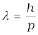 has physical significance; its phase velocity vp has no physical
significance. However, the group velocity of the matter wave is physically meaningful and equals the velocity of the particle.
Exercises
11.1 Find the
(a) maximum frequency, and
(b) minimum wavelength of X-rays produced by 30 kV electrons.
11.2 The work function of caesium metal is 2.14 eV. When light of frequency 6 ×1014Hz is incident on the metal surface, photoemission of electrons occurs. What is the
(a) maximum kinetic energy of the emitted electrons,
(b) Stopping potential, and
(c) maximum speed of the emitted photoelectrons?
11.3 The photoelectric cut-off voltage in a certain experiment is 1.5 V. What is the maximum kinetic energy of photoelectrons emitted?
11.4 Monochromatic light of wavelength 632.8 nm is produced by a helium-neon laser. The power emitted is 9.42 mW.
(a) Find the energy and momentum of each photon in the light beam,
(b) How many photons per second, on the average, arrive at a target irradiated by this beam? (Assume the beam to have uniform cross-section which is less than the target area), and
(c) How fast does a hydrogen atom have to travel in order to have the same momentum as that of the photon?
11.5 The energy flux of sunlight reaching the surface of the earth is
1.388 × 103 W/m2. How many photons (nearly) per square metre are incident on the Earth per second? Assume that the photons in the sunlight have an average wavelength of 550 nm.
11.6 In an experiment on photoelectric effect, the slope of the cut-off voltage versus frequency of incident light is found to be 4.12 × 10–15 V s. Calculate the value of Planck’s constant.
11.7 A 100W sodium lamp radiates energy uniformly in all directions. The lamp is located at the centre of a large sphere that absorbs all the sodium light which is incident on it. The wavelength of the sodium light is 589 nm. (a) What is the energy per photon associated with the sodium light? (b) At what rate are the photons delivered to the sphere?
11.8 The threshold frequency for a certain metal is 3.3 × 1014 Hz. If light of frequency 8.2 × 1014 Hz is incident on the metal, predict the cut-off voltage for the photoelectric emission.
11.9 The work function for a certain metal is 4.2 eV. Will this metal give photoelectric emission for incident radiation of wavelength 330 nm?
11.10 Light of frequency 7.21 × 1014 Hz is incident on a metal surface. Electrons with a maximum speed of 6.0 × 105 m/s are ejected from the surface. What is the threshold frequency for photoemission of electrons?
11.11 Light of wavelength 488 nm is produced by an argon laser which is used in the photoelectric effect. When light from this spectral line is incident on the emitter, the stopping (cut-off) potential of photoelectrons is 0.38 V. Find the work function of the material from which the emitter is made.
11.12 Calculate the
(a) momentum, and
(b) de Broglie wavelength of the electrons accelerated through a potential difference of 56 V.
11.13 What is the
(a) momentum,
(b) speed, and
(c) de Broglie wavelength of an electron with kinetic energy of
120 eV.
11.14 The wavelength of light from the spectral emission line of sodium is 589 nm. Find the kinetic energy at which
(a) an electron, and
(b) a neutron, would have the same de Broglie wavelength.
11.15 What is the de Broglie wavelength of
(a) a bullet of mass 0.040 kg travelling at the speed of 1.0 km/s,
(b) a ball of mass 0.060 kg moving at a speed of 1.0 m/s, and
(c) a dust particle of mass 1.0 × 10–9 kg drifting with a speed of
2.2 m/s?
11.16 An electron and a photon each have a wavelength of 1.00 nm. Find
(a) their momenta,
(b) the energy of the photon, and
(c) the kinetic energy of electron.
11.17 (a) For what kinetic energy of a neutron will the associated de Broglie wavelength be 1.40 × 10–10 m?
(b) Also find the de Broglie wavelength of a neutron, in thermal equilibrium with matter, having an average kinetic energy of (3/2) k T at 300 K.
11.18 Show that the wavelength of electromagnetic radiation is equal to the de Broglie wavelength of its quantum (photon).
11.19 What is the de Broglie wavelength of a nitrogen molecule in air at 300 K? Assume that the molecule is moving with the root-mean-square speed of molecules at this temperature. (Atomic mass of nitrogen = 14.0076 u)
Additional Exercises
11.20 (a) Estimate the speed with which electrons emitted from a heated emitter of an evacuated tube impinge on the collector maintained at a potential difference of 500 V with respect to the emitter. Ignore the small initial speeds of the electrons. The specific charge of the electron, i.e., its e/m is given to be 1.76 × 1011 C kg–1.
(b) Use the same formula you employ in (a) to obtain electron speed for an collector potential of 10 MV. Do you see what is wrong ? In what way is the formula to be modified?
11.21 (a) A monoenergetic electron beam with electron speed of 5.20 × 106 m s–1 is subject to a magnetic field of 1.30 × 10–4 T normal to the beam velocity. What is the radius of the circle traced by the beam, given e/m for electron equals 1.76 × 1011C kg–1.
(b) Is the formula you employ in (a) valid for calculating radius of the path of a 20 MeV electron beam? If not, in what way is it modified?
[Note: Exercises 11.20(b) and 11.21(b) take you to relativistic mechanics which is beyond the scope of this book. They have been inserted here simply to emphasise the point that the formulas you use in part (a) of the exercises are not valid at very high speeds or energies. See answers at the end to know what ‘very high speed or energy’ means.]
11.22 An electron gun with its collector at a potential of 100 V fires out electrons in a spherical bulb containing hydrogen gas at low pressure (∼10–2 mm of Hg). A magnetic field of 2.83 × 10–4 T curves the path of the electrons in a circular orbit of radius 12.0 cm. (The path can be viewed because the gas ions in the path focus the beam by attracting electrons, and emitting light by electron capture; this method is known as the ‘fine beam tube’ method.) Determine
e/m from the data.
11.23 (a) An X-ray tube produces a continuous spectrum of radiation with its short wavelength end at 0.45 Å. What is the maximum energy of a photon in the radiation?
(b) From your answer to (a), guess what order of accelerating voltage (for electrons) is required in such a tube?
11.24 In an accelerator experiment on high-energy collisions of electrons with positrons, a certain event is interpreted as annihilation of an electron-positron pair of total energy 10.2 BeV into two γ-rays of equal energy. What is the wavelength associated with each γ-ray? (1BeV = 109 eV)
11.25 Estimating the following two numbers should be interesting. The first number will tell you why radio engineers do not need to worry much about photons! The second number tells you why our eye can never ‘count photons’, even in barely detectable light.
(a) The number of photons emitted per second by a Medium wave transmitter of 10 kW power, emitting radiowaves of wavelength 500 m.
(b) The number of photons entering the pupil of our eye per second corresponding to the minimum intensity of white light that we humans can perceive (∼10–10 W m–2). Take the area of the pupil to be about 0.4 cm2, and the average frequency of white light to be about 6 × 1014 Hz.
11.26 Ultraviolet light of wavelength 2271 Å from a 100 W mercury source irradiates a photo-cell made of molybdenum metal. If the stopping potential is –1.3 V, estimate the work function of the metal. How would the photo-cell respond to a high intensity (∼105 W m–2) red light of wavelength 6328 Å produced by a He-Ne laser?
11.27 Monochromatic radiation of wavelength 640.2 nm (1nm = 10–9 m) from a neon lamp irradiates photosensitive material made of caesium on tungsten. The stopping voltage is measured to be 0.54 V. The source is replaced by an iron source and its 427.2 nm line irradiates the same photo-cell. Predict the new stopping voltage.
11.28 A mercury lamp is a convenient source for studying frequency dependence of photoelectric emission, since it gives a number of spectral lines ranging from the UV to the red end of the visible spectrum. In our experiment with rubidium photo-cell, the following lines from a mercury source were used:
λ1 = 3650 Å, λ2= 4047 Å, λ3= 4358 Å, λ4= 5461 Å, λ5= 6907 Å,
The stopping voltages, respectively, were measured to be:
V01 = 1.28 V, V02 = 0.95 V, V03 = 0.74 V, V04 = 0.16 V, V05 = 0 V
Determine the value of Planck’s constant h, the threshold frequency and work function for the material.
[Note: You will notice that to get h from the data, you will need to know e (which you can take to be 1.6 × 10–19 C). Experiments of this kind on Na, Li, K, etc. were performed by Millikan, who, using his own value of e (from the oil-drop experiment) confirmed Einstein’s photoelectric equation and at the same time gave an independent estimate of the value of h.]
11.29 The work function for the following metals is given:
Na: 2.75 eV; K: 2.30 eV; Mo: 4.17 eV; Ni: 5.15 eV. Which of these metals will not give photoelectric emission for a radiation of wavelength 3300 Å from a He-Cd laser placed 1 m away from the photocell? What happens if the laser is brought nearer and placed 50 cm away?
11.30 Light of intensity 10–5 W m–2 falls on a sodium photo-cell of surface area 2 cm2. Assuming that the top 5 layers of sodium absorb the incident energy, estimate time required for photoelectric emission in the wave-picture of radiation. The work function for the metal is given to be about 2 eV. What is the implication of your answer?
11.31 Crystal diffraction experiments can be performed using X-rays, or electrons accelerated through appropriate voltage. Which probe has greater energy? (For quantitative comparison, take the wavelength of the probe equal to 1 Å, which is of the order of inter-atomic spacing in the lattice) (me=9.11 × 10–31 kg).
11.32 (a) Obtain the de Broglie wavelength of a neutron of kinetic energy 150 eV. As you have seen in Exercise 11.31, an electron beam of this energy is suitable for crystal diffraction experiments. Would a neutron beam of the same energy be equally suitable? Explain. (mn = 1.675 × 10–27 kg)
(b) Obtain the de Broglie wavelength associated with thermal neutrons at room temperature (27 ºC). Hence explain why a fast neutron beam needs to be thermalised with the environment before it can be used for neutron diffraction experiments.
11.33 An electron microscope uses electrons accelerated by a voltage of 50 kV. Determine the de Broglie wavelength associated with the electrons. If other factors (such as numerical aperture, etc.) are taken to be roughly the same, how does the resolving power of an electron microscope compare with that of an optical microscope which uses yellow light?
11.34 The wavelength of a probe is roughly a measure of the size of a structure that it can probe in some detail. The quark structure of protons and neutrons appears at the minute length-scale of
10–15 m or less. This structure was first probed in early 1970’s using high energy electron beams produced by a linear accelerator at Stanford, USA. Guess what might have been the order of energy of these electron beams. (Rest mass energy of electron = 0.511 MeV.)
11.35 Find the typical de Broglie wavelength associated with a He atom in helium gas at room temperature (27 ºC) and 1 atm pressure; and compare it with the mean separation between two atoms under these conditions.
11.36 Compute the typical de Broglie wavelength of an electron in a metal at 27 ºC and compare it with the mean separation between two electrons in a metal which is given to be about 2 × 10–10 m.
[Note: Exercises 11.35 and 11.36 reveal that while the wave-packets associated with gaseous molecules under ordinary conditions are non-overlapping, the electron wave-packets in a metal strongly overlap with one another. This suggests that whereas molecules in an ordinary gas can be distinguished apart, electrons in a metal cannot be distintguished apart from one another. This indistinguishibility has many fundamental implications which you will explore in more advanced Physics courses.]
11.37 Answer the following questions:
(a) Quarks inside protons and neutrons are thought to carry fractional charges [(+2/3)e ; (–1/3)e]. Why do they not show up in Millikan’s oil-drop experiment?
(b) What is so special about the combination e/m? Why do we not simply talk of e and m separately?
(c) Why should gases be insulators at ordinary pressures and start conducting at very low pressures?
(d) Every metal has a definite work function. Why do all photoelectrons not come out with the same energy if incident radiation is monochromatic? Why is there an energy distribution of photoelectrons?
(e) The energy and momentum of an electron are related to the frequency and wavelength of the associated matter wave by the relations:
E = h ν, p = 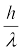
But while the value of λ is physically significant, the value of ν (and therefore, the value of the phase speed ν λ) has no physical significance. Why?
What is light? This question has haunted mankind for a long time. But systematic experiments were done by scientists since the dawn of the scientific and industrial era, about four centuries ago. Around the same time, theoretical models about what light is made of were developed. While building a model in any branch of science, it is essential to see that it is able to explain all the experimental observations existing at that time. It is therefore appropriate to summarize some observations about light that were known in the seventeenth century.
The properties of light known at that time included (a) rectilinear propagation of light, (b) reflection from plane and curved surfaces, (c) refraction at the boundary of two media, (d) dispersion into various colours, (e) high speed. Appropriate laws were formulated for the first four phenomena. For example, Snell formulated his laws of refraction in 1621. Several scientists right from the days of Galileo had tried to measure the speed of light. But they had not been able to do so. They had only concluded that it was higher than the limit of their measurement.
Two models of light were also proposed in the seventeenth century. Descartes, in early decades of seventeenth century, proposed that light consists of particles, while Huygens, around 1650-60, proposed that light consists of waves. Descartes′ proposal was merely a philosophical model, devoid of any experiments or scientific arguments. Newton soon after, around 1660-70, extended Descartes′ particle model, known as corpuscular theory, built it up as a scientific theory, and explained various known properties with it. These models, light as waves and as particles, in a sense, are quite opposite of each other. But both models could explain all the known properties of light. There was nothing to choose between them.
The history of the development of these models over the next few centuries is interesting. Bartholinus, in 1669, discovered double refraction of light in some crystals, and Huygens, in 1678, was quick to explain it on the basis of his wave theory of light. In spite of this, for over one hundred years, Newton’s particle model was firmly believed and preferred over the wave model. This was partly because of its simplicity and partly because of Newton’s influence on contemporary physics.
Then in 1801, Young performed his double-slit experiment and observed interference fringes. This phenomenon could be explained only by wave theory. It was realized that diffraction was also another phenomenon which could be explained only by wave theory. In fact, it was a natural consequence of Huygens idea of secondary wavelets emanating from every point in the path of light. These experiments could not be explained by assuming that light consists of particles. Another phenomenon of polarisation was discovered around 1810, and this too could be naturally explained by the wave theory. Thus wave theory of Huygens came to the forefront and Newton’s particle theory went into the background. This situation again continued for almost a century.
Better experiments were performed in the nineteenth century to determine the speed of light. With more accurate experiments, a value of 3×108 m/s for speed of light in vacuum was arrived at. Around 1860, Maxwell proposed his equations of electromagnetism and it was realized that all electromagnetic phenomena known at that time could be explained by Maxwell’s four equations. Soon Maxwell showed that electric and magnetic fields could propagate through empty space (vacuum) in the form of electromagnetic waves. He calculated the speed of these waves and arrived at a theoretical value of 2.998×108 m/s. The close agreement of this value with the experimental value suggested that light consists of electromagnetic waves. In 1887 Hertz demonstrated the generation and detection of such waves. This established the wave theory of light on a firm footing. We might say that while eighteenth century belonged to the particle model, the nineteenth century belonged to the wave model of light.
Vast amounts of experiments were done during the period 1850-1900 on heat and related phenomena, an altogether different area of physics. Theories and models like kinetic theory and thermodynamics were developed which quite successfully explained the various phenomena, except one.
Every body at any temperature emits radiation of all wavelengths. It also absorbs radiation falling on it. A body which absorbs all the radiation falling on it is called a black body. It is an ideal concept in physics, like concepts of a point mass or uniform motion. A graph of the intensity of radiation emitted by a body versus wavelength is called the black body spectrum. No theory in those days could explain the complete black body spectrum!
In 1900, Planck hit upon a novel idea. If we assume, he said, that radiation is emitted in packets of energy instead of continuously as in a wave, then we can explain the black body spectrum. Planck himself regarded these quanta, or packets, as a property of emission and absorption, rather than that of light. He derived a formula which agreed with the entire spectrum. This was a confusing mixture of wave and particle pictures – radiation is emitted as a particle, it travels as a wave, and is again absorbed as a particle! Moreover, this put physicists in a dilemma. Should we again accept the particle picture of light just to explain one phenomenon? Then what happens to the phenomena of interference and diffraction which cannot be explained by the particle model?
But soon in 1905, Einstein explained the photoelectric effect by assuming the particle picture of light. In 1907, Debye explained the low temperature specific heats of solids by using the particle picture for lattice vibrations in a crystalline solid. Both these phenomena belonging to widely diverse areas of physics could be explained only by the particle model and not by the wave model. In 1923, Compton’s x-ray scattering experiments from atoms also went in favour of the particle picture. This increased the dilemma further.
Thus by 1923, physicists faced with the following situation. (a) There were some phenomena like rectilinear propagation, reflection, refraction, which could be explained by either particle model or by wave model. (b) There were some phenomena such as diffraction and interference which could be explained only by the wave model but not by the particle model. (c) There were some phenomena such as black body radiation, photoelectric effect, and Compton scattering which could be explained only by the particle model but not by the wave model. Somebody in those days aptly remarked that light behaves as a particle on Mondays, Wednesdays and Fridays, and as a wave on Tuesdays, Thursdays and Saturdays, and we don’t talk of light on Sundays!
In 1924, de Broglie proposed his theory of wave-particle duality in which he said that not only photons of light but also ‘particles’ of matter such as electrons and atoms possess a dual character, sometimes behaving like a particle and sometimes as a wave. He gave a formula connecting their mass, velocity, momentum (particle characteristics), with their wavelength and frequency (wave characteristics)! In 1927 Thomson, and Davisson and Germer, in separate experiments, showed that electrons did behave like waves with a wavelength which agreed with that given by de Broglie’s formula. Their experiment was on diffraction of electrons through crystalline solids, in which the regular arrangement of atoms acted like a grating. Very soon, diffraction experiments with other ‘particles’ such as neutrons and protons were performed and these too confirmed with de Broglie’s formula. This confirmed wave-particle duality as an established principle of physics. Here was a principle, physicists thought, which explained all the phenomena mentioned above not only for light but also for the so-called particles.
But there was no basic theoretical foundation for wave-particle duality. De Broglie’s proposal was merely a qualitative argument based on symmetry of nature. Wave-particle duality was at best a principle, not an outcome of a sound fundamental theory. It is true that all experiments whatever agreed with de Broglie formula. But physics does not work that way. On the one hand, it needs experimental confirmation, while on the other hand, it also needs sound theoretical basis for the models proposed. This was developed over the next two decades. Dirac developed his theory of radiation in about 1928, and Heisenberg and Pauli gave it a firm footing by 1930. Tomonaga, Schwinger, and Feynman, in late 1940s, produced further refinements and cleared the theory of inconsistencies which were noticed. All these theories mainly put wave-particle duality on a theoretical footing.
Although the story continues, it grows more and more complex and beyond the scope of this note. But we have here the essential structure of what happened, and let us be satisfied with it at the moment. Now it is regarded as a natural consequence of present theories of physics that electromagnetic radiation as well as particles of matter exhibit both wave and particle properties in different experiments, and sometimes even in the different parts of the same experiment.